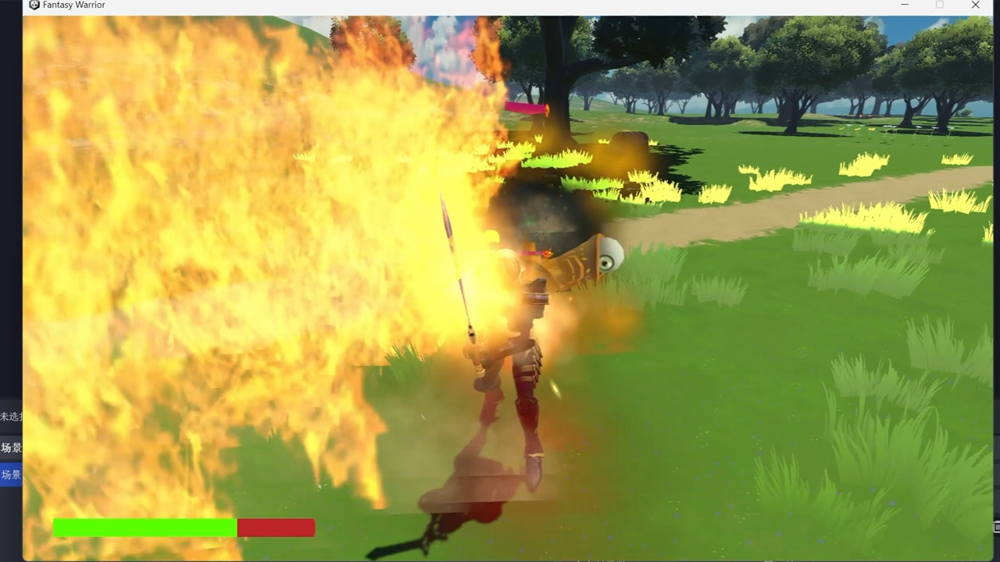
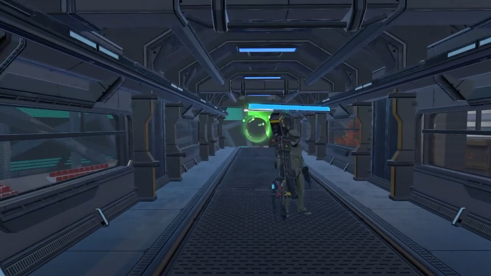
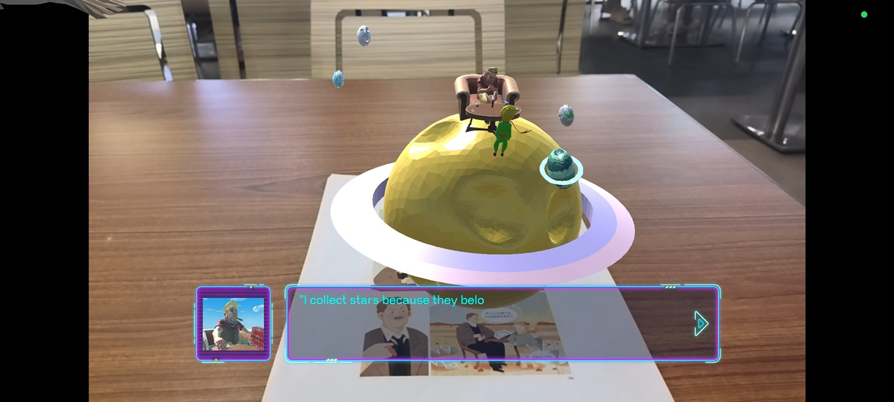
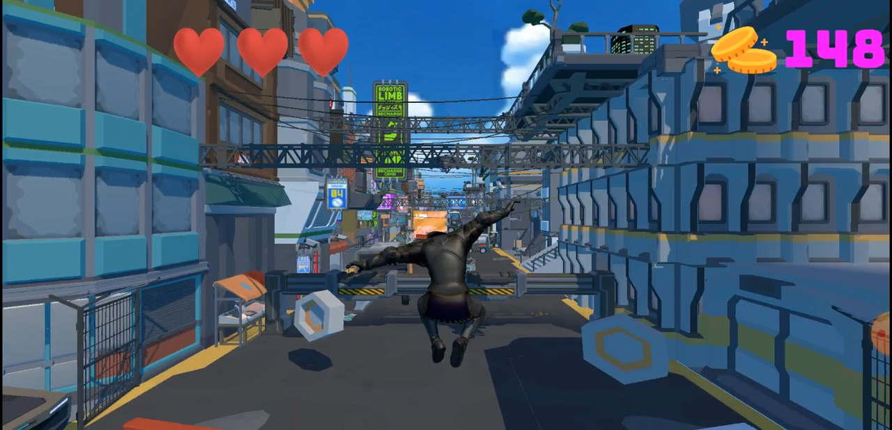

Game project
Fantastic Worriers
A fantasy combat project featuring dialogue, enemy encounters, combat feedback, and staged level progression.
Open videoGames
A set of playable projects showing level work, enemy and boss behavior, narrative interactions, and complete prototype implementation.

Project index

A fantasy combat project featuring dialogue, enemy encounters, combat feedback, and staged level progression.
Open videoA sci-fi warfare level with corridor traversal, interface-driven presentation, and large-scale encounter spaces.
Open trailer
Interactive small-planet scenes inspired by The Little Prince, combining character moments, dialogue UI, and spatial staging.
Open video
A runner-style prototype with movement through an urban level, collectible scoring, player feedback, and visible game UI.
Open video